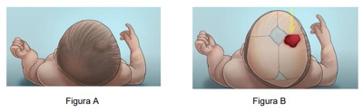
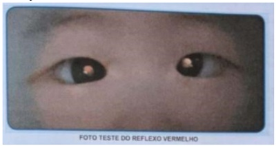

Um médico está responsável pelo alojamento conjunto e avalia um recém-nascido (RN) de 60 horas de vida, nascido de parto normal, com idade gestacional de 38 semanas e peso ao nascer de 3.580 g; mãe e RN sem comorbidades. Teste da oximetria (“coraçãozinho”) com resultado MSD de 92% e MMI de 94%. Assinale a alternativa que apresenta a conduta adequada para esse caso clínico.
De acordo com a Lei nº 14.154/2021, haverá ampliação do rol mínimo de patologias detectadas por meio do teste do pezinho pelo Sistema Único de Saúde (SUS), que entrou em vigor em maio de 2022. O processo para inserção das doenças na triagem neonatal será feito de forma gradual, conforme etapas previstas na Lei. Quanto a esse assunto, assinale a alternativa que apresenta corretamente qual será a primeira doença acrescentada na primeira etapa desse processo.
Menino, 23 dias de vida, foi convocado para consulta por apresentar TSH=25mUI/L em teste de triagem neonatal coletado em papel- ltro no quarto dia de vida. Mãe nega queixas. Está em aleitamento materno exclusivo com ganho ponderal de 28g/dia e o exame físico é normal. Antecedentes pessoais: gravidez e parto sem intercorrências (Capurro=39 semanas; peso ao nascimento=3.125g).
Recém-nascido do sexo masculino, de 15 dias de vida, comparece à Unidade Básica de Saúde para consulta de rotina. A mãe tem 40 anos, é quartigesta com três cesarianas anteriores, hipertensa crônica, recebeu assistência pré-natal adequada, tendo apresentado diabetes gestacional controlada com dieta. Não há antecedente familiar de surdez permanente e os pais não são consanguíneos. A criança nasceu com 37 semanas e 2 dias de idade gestacional, de parto cesariano com peso de 2.700 g, APGAR 7/9/10, permanecendo internada devido à icterícia neonatal tratada com fototerapia. Recebeu alta da maternidade no quinto dia de vida, com icterícia zona II de Krammer, sem outras alterações ao exame clínico. Assinale a alternativa correta considerando o caso acima.
Mãe de 28 anos, primigesta, sem comorbidades, há 24 horas deu à luz a um recém-nascido a termo, adequado para a idade gestacional. O pré-natal foi adequado e sem intercorrências. O primeiro exame clínico completo do recém-nascido não apresentou alterações. A mãe refere preocupação com relação à investigação de fenilcetonúria, pois tem histórico familiar da doença. Ela insiste na realização imediata de exames que identifiquem a doença. Com relação ao exame de triagem para a doença em questão, está correto afirmar:
Recém-nascido a termo, lho de pais negros, pré-natal sem intercorrências, sorologias de primeiro e terceiro trimestres sem alterações, parto cesárea por macrossomia fetal. Ao nascimento apresentou lesões vésico-pustulosas em face, tronco, membros e até mesmo em palmas e plantas. O restante do exame físico do paciente era normal. Entre as opções abaixo, o diagnóstico mais provável para esse recém-nascido é:
Acerca dos distúrbios rastreados no Programa Nacional de Triagem Neonatal, assinale a alternativa correta.
O nascimento de um neonato com 36 semanas de idade gestacional ocorreu via parto vaginal, sem necessidade de fórceps. A evolução do parto transcorreu dentro da normalidade. O recém-nascido foi posicionado sobre o ventre materno, tendo apresentado cianose, choro forte e tônus adequado. Diante do quadro, deve-se realizar o clampeamento do cordão umbilical
Os recém-nascidos pré-termo costumam ser classificados em relação à idade gestacional, ao peso de nascimento e à relação entre essas duas variáveis. Considerando-se a importância da classificação dos prematuros para determinar riscos e prognósticos, assinalar a alternativa CORRETA:
Recém-nascido, sexo masculino, 3 dias de vida, nascido a termo por parto normal, Apgar 9/10, apresenta lesões em todo o corpo, exceto palmas e plantas. São vesículas, pápulas e pústulas com 1 a 3 mm, rodeadas por halo eritematoso de cerca de 1 cm de diâmetro. Sem outras alterações no exame físico, o diagnóstico próprio ao quadro é
Qual exame auditivo deve ser realizado em crianças que permaneceram internadas em UTI-Neonatal por mais de 5 dias?
triagem neonatal a partir da matriz biológica, “teste do pezinho”, é um conjunto de ações preventivas, responsável por identi car precocemente indivíduos com doenças metabólicas, genéticas, enzimáticas e endocrinológicas, para que estes possam ser tratados em tempo oportuno, evitando as sequelas e até mesmo a morte. Sobre o “teste do pezinho”. Analise as afirmativas abaixo e dê valores Verdadeiro (V) ou Falso (F). ( ) Recomenda-se que o período ideal de coleta da primeira amostra, para recém-nascidos normais, esteja compreendido entre o 3º e o 5º dia de vida do bebê ( ) O uso de esteroides pela mãe não interfere nos resultados do teste ( ) Em casos de mães com hipotireoidismo tratado e bem controlado não gestação, não há interferência no resultado do teste ( ) Deficiência de Biotinidase não é uma das doenças diagnosticáveis a partir do teste Estão corretas as afirmativas:
Assinale a alternativa que preencha corretamente a lacuna. Resultado falso negativo para galactosemia, após teste do pezinho pode ocorrer em mãe ____________.
Recém-nascido a termo, com 5 dias de vida, é levado à emergência por apresentar lesões avermelhadas pelo corpo. Seu responsável refere que o bebê teve alta da maternidade com 48 horas de vida e que, ao chegar ao domicílio, notou pequenas lesões avermelhadas, principalmente, no tronco, que, com o passar dos dias, espalharam-se por todo o corpo. Ao exame, o paciente encontra-se em bom estado geral, ativo e reativo, com fontanela anterior normotensa, ictérico +/4+ (zona I de Kramer), acianótico, afebril, hidratado, corado e com boa perfusão periférica. Chamam a atenção diversas lesões pustulosas com halo eritematoso de 1 a 2mm, rmes, amplamente distribuídas pelo corpo, poupando palmas das mãos e plantas dos pés. Restante do exame físico sem alterações. O esfregaço da secreção purulenta evidenciou grande quantidade de eosinófilos. O diagnóstico mais provável das lesões é:
Em relação às diretrizes da Sociedade Brasileira de Pediatria para Reanimação de Recém-Nascidos com idade gestacional ≥ 34 semanas, analisar os itens abaixo: I. A necessidade de reanimação é maior quanto maior a idade gestacional e o peso ao nascer. II. Cesareana a termo pode elevar a chance de que a ventilação ao nascer seja necessária, mesmo sem fatores de risco antenatais para asfixia. III. Qualquer equipe de saúde está habilitada para atender a sala de parto de um recém-nascido, desde que o mesmo seja a termo. IV. O material que será utilizado na reanimação deve estar previamente revisado e preparado para o atendimento. Estão CORRETOS:
Em um alojamento conjunto, encontram-se um recém-nascido com sessenta horas de vida, nascido de parto normal, com idade gestacional de 38 semanas e peso ao nascer igual a 3.580 g, e sua mãe, ambos sem comorbidades. Com base nesse caso hipotético, assinale a alternativa que apresenta um impedimento à alta do recém-nascido.
Pediatra é chamado para acompanhar parto de mão sabidamente hipertensa, que fez o controle pré-natal com uso de medicação adequada aos níveis pressóricos, com bom controle, com (38) semanas de gestação. Foi detectado, durante o período expulsivo, liquido amniótico meconial espesso. Ao chegar, ele avalia que o recém-nascido apresenta, logo após o parto vaginal, frequência cardíaca de 110bpm ritmo respiratório regular (choro forte) Nesse momento, a conduta que se mostra MAIS ADEQUADA é:
Em qual das seguintes situações, pode-se proceder ao clampeamento tardio do cordão umbilical?
Na classificação do recém-nascido conforme a idade gestacional, sabe-se que:
Recém-nascido, sexo feminino, 24 horas de vida, está no alojamento conjunto. Nascida com idade gestacional de 40 semanas e 2 dias, parto fórcipe, Apgar 8/9, peso de 3.950 g, com período expulsivo prolongado. Criança recebeu vacina de hepatite B, nitrato de prata ocular e vitamina K intramuscular. Pré-natal sem anormalidades. Ao exame clínico, criança em bom estado geral, e a inspeção da cabeça mostrou a presença de um abaulamento (Figura A), cujos limites anatômicos estão esquematicamente representados abaixo (figura B). Sem outras alterações significativas. Qual é a conduta, considerando a principal hipótese diagnóstica?

Recém-nascido a termo apresenta desde o nascimento lesões vesicopustulares de 1 a 3 milímetros de diâmetro em cabeça, região cervical e tronco. As lesões rompem-se espontaneamente e deixam uma descamação em colarete que evoluem para pequenas manchas hipercrômicas. O diagnóstico mais provável é:
Diante de um recém-nascido conduzido à mesa de reanimação, deve-se iniciar os passos da estabilização na sequência adequada, com duração de no máximo 30 segundos. Qual das opções abaixo apresenta a sequência correta?
Ao recepcionar um recém-nascido de 39 semanas, por parto normal sem intercorrências, líquido amniótico claro, com bom tônus e choro forte, o residente de pediatria solicitou ao obstetra para realizar clampeamento tardio do cordão umbilical. Tal atitude visa:
O período neonatal é uma fase considerada de vulnerabilidade à saúde infantil por riscos biológicos. Classi ca-se como período neonatal o:
Revisar: possível letra faltando em enunciado
Coef iciente ou Taxa de mortalidade pósneonatal ou mortalidade tardia Coef iciente ou Taxa de mortalidade na inf ância mortalidade em menores de 5 anos Nascido de 35 semanas e quatro dias de idade gestacional, com peso de 2.000 gramas, recém-nascido apresentou desconforto respiratório e pneumotórax, tendo evoluído para óbito no sexto dia de vida. Mãe, 30 anos, fez 10 consultas de pré-natal na unidade básica de saúde. Em relação às características do RN, assinale a opção correta.
Mãe assintomática, com teste molecular (RT - PCR) positivo para SARS-CoV-2 realizado no início do trabalho de parto, dá à luz, por parto vaginal, a recém-nascido a termo, sem intercorrências observadas. Qual a conduta CORRETA, baseada nas Normas Técnicas do Ministério da Saúde?
RN lho de mãe suspeita de Covid-19, nasce bem, bom tônus e FC<100bpm. Segundo as orientações da SBP, o binômio mãe e bebê devem ficar em
Sobre o transporte intra-hospitalar do recém-nascido, marque ( ) Com o advento de exames cada vez mais so sticados que se realizam fora da UTI, o número de neonatos graves transportados dentro do hospital é cada vez menor. ( ) Não há alteração significativa no neonato, durante o transporte intra-hospitalar. ( ) O sistema portátil de transporte deve promover condições mínimas de estabilidade cardiorrespiratória e neurológica. ( ) O RN deve ser transportado em incubadora de transporte transparente com dupla parede, energia e fonte de luz própria e previamente aquecida. Assinale a sequência
Um recém-nascido de parto cesárea por DHEG, apgar 7/8, PN 1450g, comprimento 43 cm e perímetro cefálico 31 cm recebeu estimativa de idade gestacional de 33 semanas e 4 dias. Classifique o recém-nascido:
Conforme a Organização Mundial da Saúde, o recém-nascido deverá ser classificado como pré-termo quando tiver idade gestacional menor que.
Pode-se a rmar que são medidas importantes no planejamento de alta da maternidade para RN a termo e sem fatores de risco:
Durante o internato de pediatria, no estágio de neonatologia, um acadêmico realiza o primeiro exame de um recém-nascido de 24 horas de vida e o descreve ao preceptor da seguinte forma: bom estado geral, posição de exão dos quatro membros, choro sonoro à movimentação, porém consolável, leve descamação da pele em tronco, pequena mancha salmão em glabela, presença de mancha mongólica em região de nádega, ausculta respiratória sem ruídos adventícios, com frequência respiratória de 57 irpm, ausculta cardíaca sem alterações, com frequência cardíaca de 136 bpm, abdome e genitália sem alterações, manobra de Ortolani negativa. Sobre o exame físico descrito, assinale a alternativa correta.
Determinado recém-nascido (RN) a termo, grande para a idade gestacional, nascido de parto vaginal com período expulsivo prolongado, apresenta-se ao nascimento em apneia, com hipotonia. O líquido amniótico era tinto de mecônio. O paciente, então, é levado ao berço aquecido. Demonstra FC = 80 bpm; e SatO2 = 80%. A mãe realizou pré-natal adequadamente, sem malformações congênitas detectadas no RN. A respeito desse caso clínico e considerando os conhecimentos médicos correlatos, julgue o item a seguir. Para a avaliação do neurodesenvolvimento na infância, indica-se avaliar o Apgar da criança ao nascimento.
O teste de triagem neonatal para anquiloglossia é realizado por profissional habilitado para detectar:
Um recém-nascido a termo, com 25 horas de vida, é submetido ao teste do coraçãozinho (teste de oximetria), obtendo o seguinte resultado: membro superior direito 100% e membro inferior esquerdo 96%. A conduta que deve ser tomada nessa situação é:
RN nascido de parto fórceps, 40 semanas de idade gestacional, com P= 4000g apresentando alteração, ao exame físico, sugestiva de bossa serossanguinolenta. Assinale a alternativa correta a respeito dos sinais que reforçam tal hipótese:
Considere as assertivas abaixo sobre testes de rastreamento para recém-nascidos e crianças, preconizados pelo Ministério da Saúde. I - Os testes de rastreamento para anemia falciforme, hipotireoidismo congênito, fenilcetonúria e brose cística são recomendados para todos os recém-nascidos, independentemente da raça e do local de nascimento. II. - O teste de orelhinha, para o rastreamento de perda auditiva, é recomendado para todos os recém-nascidos, devendo ser realizado, idealmente, antes de se completar o primeiro mês de vida. III. - O teste do reflexo vermelho, conhecido como teste do olhinho, deve ser realizado nos recém-nascidos, sendo inefetiva sua realização nas consultas de puericultura subsequentes. Quais são corretas?
Síndrome do desconf orto respiratório do RN SDR ou Doença da Membrana Hialina DMH Um recém-nascido de 27 semanas de idade gestacional, peso de nascimento de 890 g e nascido de parto cesáreo de urgência devido à pré-eclâmpsia materna, apresentou APGAR 1.º min = 3, 5.º min = 5 e 10.º min = 7. Foram realizadas manobras de reanimação neonatal e o paciente foi intubado em sala de parto. Na admissão na UTI neonatal, o paciente encontrava-se estabilizado em ventilação mecânica em modo assistido e controlado, com PEEP = 6 cmH2O, Pinsp = 15 cmH2O, frequência respiratória de 30 ipm e FiO2 = 50%. Realizou radiogra a de tórax, que evidenciou in ltrado reticulogranular bilateral difuso, associado à presença de broncogramas aéreos. Com base nesse caso hipotético, assinale a alternativa que apresenta os diagnósticos corretos.
Gestante com 35 anos de idade, internada em uso de drogas hipotensoras, idade gestacional de 33 semanas e 6 dias evolui com pré-eclâmpsia grave e tem a cesárea indicada. A equipe de neonatologia é avisada do caso e recebe o recém-nascido pré- termo, que após a total extração do corpo materno mostra-se ativo e com choro vigoroso. A melhor conduta para esse caso, dentre as abaixo, é:
Recém-nascido de parto cesárea de urgência devido a descolamento prematuro de placenta na 24ª semana de gestação pesando 840g (peso acima do percentil 10 na curva de Lubchenco) é classificado corretamente como:
De acordo com as Diretrizes da Sociedade Brasileira de Pediatria, ao nascimento de um recém-nascido (RN) com idade gestacional acima de 34 semanas, alguns parâmetros devem ser avaliados para decidir pelo clampeamento tardio do cordão umbilical. É necessário, por exemplo, que a placenta esteja com a circulação preservada, sem descolamento prematuro de placenta, placenta prévia ou rotura ou prolapso ou nó verdadeiro de cordão. Além disso, também deve ser avaliado:
Na sala de parto um recém-nascido de termo é seco e estimulado ao nascer, está em apneia, hipotônico e cianótico com frequência cardíaca de 70 bpm. Com um minuto de vida, continua cianótico, hipotônico e tem uma frequência cardíaca de 70 bpm, respirando irregularmente a uma taxa de 15 respirações por minuto e faz algumas caretas durante a estimulação, mas não chora. A equipe segue as diretrizes apropriadamente, faz ventilação com pressão positiva com máscara. Aos 5 minutos, a frequência cardíaca subiu para 90 bpm, o tronco cou corado (mas as mãos e os pés permanecem cianóticos), está respirando espontaneamente e tem melhora do tônus exor, mas não se movimenta ativamente. Aos 10 minutos, o lactente está chorando, respirando, se movimentando ativamente, completamente corado e com frequência cardíaca de 120 bpm. Quais notas foram as pontuações do Boletim de Apgar dessa criança?
No exame do umbigo do recém-nascido (RN), qual é o número normal de vasos do cordão umbilical?
Sobre os exames de triagem neonatal, as assertivas abaixo estão corretas, EXCETO:
Recém-nascido, sexo feminino, em sua primeira consulta de puericultura aos sete dias de vida, apresenta lesões em pele desde o terceiro dia de vida. Ao exame físico, observam-se lesões caracterizadas por máculas e pápulas, com pústulas sobre uma base eritematosa, localizadas principalmente em tronco. Qual o diagnóstico MAIS provável, com a respectiva conduta:
Qual a idade ideal para coleta de sangue para a triagem neonatal do hipotireoidismo congênito?
De acordo com as recomendações do Ministério da Saúde brasileiro, são doenças triadas no teste do pezinho: I - Fibrose cística. II - Hiperplasia adrenal congênita. III - Anemia falciforme. Quais estão corretas?
A Portaria nº 2.068/2016 institui diretrizes para a organização da atenção integral e humanizada no alojamento conjunto. São requisitos para a permanência de um recém nascido clinicamente estável e com boa vitalidade e controle térmico juntamente com a mãe no alojamento conjunto:
Recém-nascido masculino, com 27 dias de vida, é trazido por seus pais para revisão de puericultura. Os pais estão preocupados devido a um Teste do Pezinho alterado para hipotireoidismo. Assinale a alternativa que apresenta, corretamente, a conduta a ser adotada nesse caso.
Todo bebê que nasce no Brasil tem direito a realizar gratuitamente quatro exames importantes, são os chamados exames da triagem neonatal: Teste do Pezinho, Teste do Olhinho, Teste da Orelhinha e Teste do Coraçãozinho. Sobre esses Testes é INCORRETO afirmar:
Em relação à triagem neonatal biológica no Brasil, assinale a alternativa correta.
De acordo com o Ministério da Saúde e o Programa Nacional de Triagem Neonatal, o teste do pezinho básico contempla todas as seguintes condições clínicas, exceto
Considere um recém-nascido, parto normal, com idade gestacional de 37 semanas e 2/7, peso de nascimento de 2820 gramas, correspondendo ao escore-z –0,3 da curva Intergrowth-21"st". Esse bebê é classificado como
Paciente vem a Unidade de Saúde para consulta de 1 mês de vida com pediatra. É realizado o teste do reflexo vermelho (TRV). Baseado na foto abaixo, qual o resultado da avaliação e conduta imediata?

Recém-nascido a termo, peso adequado para a idade gestacional, com uma semana de vida apresenta pequenas pápulas e pústulas sobre base eritematosa no tronco, face e membros, incluindo palmas e plantas. A mãe informa que observou quadro semelhante no segundo dia de vida, que desapareceu em 48 horas e retornou pucos dias depois. A hipótese diagnóstica mais provável é:
A mãe de um recém-nascido com 3 dias de vida procurou o pronto-socorro, porque a criança apresentou sangramento significativo em fezes. Foram realizados alguns exames cujos resultados são os seguintes: hemograma com Hb 14 g/dL, leucócitos 6000 /mm³, plaquetas 500.000 / mm³, TAP 40% e TTP 23seg. O diagnóstico que o caso sugere e a conduta terapêutica a ser adotada são, respectivamente,
Você está aguardando o nascimento de um bebê na sala de parto e observa-se durante saída da cabeça a presença de líquido amniótico meconial espesso. I - Estaria indicada a aspiração rotineira da nasofaringe no intraparto. PORQUE: II - Reduz o risco da síndrome de aspiração meconial.
Qual a idade ideal para a realização da triagem neonatal para hipotireoidismo congênito em recém-nascidos a termo?
Um Recém-Nascido (RN), com idade gestacional de 33 semanas e 2/7, que apresenta, ao exame físico, perímetro cefálico, peso e comprimento abaixo do percentil 10 da curva de crescimento intrauterino de referência, deve ser classificado como:
Durante o exame de triagem ocular de um RN (reflexo do olho vermelho), o médico percebeu a presença de um reflexo branco-amarelado ou leucocoria. Considerando essa situação hipotética, assinale a alternativa que apresenta a patologia que esse achado não pode representar.
A classificação de um recém-nascido com idade gestacional de 36 semanas e 4/7, com peso abaixo do percentil 3, e altura e perímetro cefálico no percentil 50 das curvas de referência, é:
A definição de recém-nascido de muito baixo peso compreende criança que tem peso de nascimento, em gramas, menor que:
Recém-nascido com 60 segundos de vida apresenta FC = 146 bpm, respiração presente lenta e irregular, alguma exão de extremidades, espirros ao estímulo com cateter e acrocianose. A sua pontuação de Escore Apgar é:
Na avaliação antropométrica do recém-nascido, baixo peso, ao nascer, é definido como valores de peso, ao nascer, menor que quantos gramas?
Na grande maioria dos casos, o primeiro exame físico de rotina do recém-nascido revela mais anormalidade do que nos subsqüentes. Existem, no entanto, alterações encontradas que correspondem à normalidade. Dentre as alterações abaixo relacionadas a que representa uma situação patológica é:
Um recém-nascido de termo (RNT), adequado para a idade gestacional (AIG), peso de nascimento de 3.220 g. Apgar de 8 / 9 / 10 no primeiro, quinto e décimo minutos, respectivamente. A gestante realizou 9 consultas pré-natais, com exames normais e sorologias para HIV, VDRL e Toxoplasmose negativas no primeiro e no terceiro trimestres; Rubéola e Citomegalovírus imune; Hepatite C negativa e Hepatite B com anti Hbs Ag negativo, HBs Ag negativo e anti Hbc Ag negativo. Exames maternos colhidos no pré- parto revelaram tipagem sanguínea A Rh negativo. Coombs indireto negativo. Parto fórcipe de alívio materno-fetal e tipagem sanguínea do RN O Rh positivo com Coombs direto negativo. Na prescrição deste RN para as primeiras 24 horas de vida, qual medida não é adequada.
Uma criança no quinto minuto de vida apresenta frequência cardíaca de 105 bpm; coloração de pele rósea; pouca exão de membros; respiração lenta e irregular, e ausência de resposta à irritabilidade reflexa. Calcule o índice de APGAR (Vírgínia Apgar- 1953) deste bebê e assinale a alternativa correta:
O teste do pezinho faz parte do programa nacional de triagem neonatal e tem como objetivo diagnosticar uma série de doenças nos recém-nascidos (RNs), o mais precoce possível, a m de evitar sequelas nestas crianças. Até quantos dias, após o nascimento, pode-se colher o teste do pezinho?
Levando em conta a nomenclatura e as definições utilizadas em neonatologia, deve- se considerar o seguinte: Respostas: 1 12 23 34 45 56 67